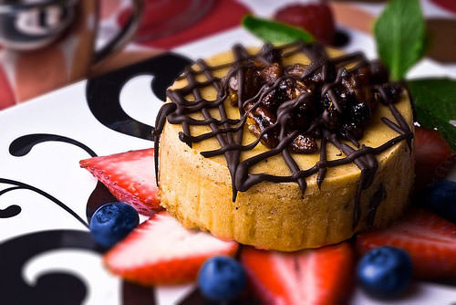
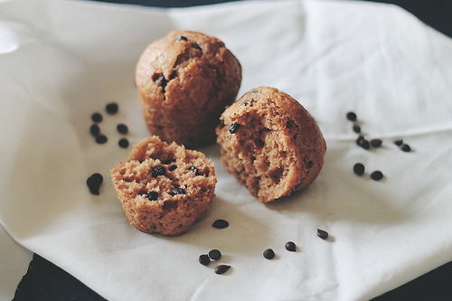

<div class="unit unit-s-1 unit-m-2-3 content">
	<div class="unit-spacer">
			<ol class="breadcrumb">
				<li class="active">HOME</li>
			</ol>
		<h1>Dessert Recipes</h1>
		<p>From <strong>frozen treats</strong> to <strong>baked goods</strong>, every sweet tooth can find what they are craving here on <strong>Desserts</strong>. We offer a great selection of <strong>recipes</strong> for all ages and skill levels and make it easy for you to find exactly what you are looking for.</p>
		<p>Simply use our search menu on the side, scroll down to see todays features, or pick a category to get started!</p>
		<h2>Desserts of the Day</h2>
		<p>Everybody loves desserts, and here on Desserts we believe there is a sweet treat for everyone and every occasion! Why not take a look at what we think you should have for dessert tonight?</p>
		<div class="unit unit-s-1 unit-m-photos unit-l-photos">
			<div class="unit-spacer"> 
				
				<h3><a href="{{site.baseurl}}/cheesecake.html">Cheesecake</a></h3>
				<p>Delicious fluffy cheesecake with peanut and chocolate drizzel. Served with a side of fresh cut fruit.</p>
			</div>
		</div>
		<div class="unit unit-s-1 unit-m-photos unit-l-photos">
			<div class="unit-spacer"> 
				
				<h3><a href="#">Muffins</a></h3>
				<p>Bite-sized, freshly baked, fluffy bran muffins with chocolate bits. Best served with a hot cup of coffee.</p>
			</div>
		</div>
	</div>
</div>
